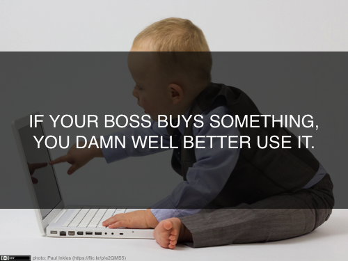

<div id="blog" class="container">
  <div class="post">
	<h1 class="title">Why use Open Source Software?</h1>
	<div class="meta row">
    <div class="byline col-md-6">
      27 Mar 2014, written by Charlie Greenbacker
    </div>
    <div class="share col-md-6">
      <a href="https://twitter.com/share" class="twitter-share-button" data-via="oss4ds">Tweet</a>
      <script>!function(d,s,id){var js,fjs=d.getElementsByTagName(s)[0],p=/^http:/.test(d.location)?'http':'https';if(!d.getElementById(id)){js=d.createElement(s);js.id=id;js.src=p+'://platform.twitter.com/widgets.js';fjs.parentNode.insertBefore(js,fjs);}}(document, 'script', 'twitter-wjs');</script>
    </div>
  </div>
		<div class="post-content">
		<p>As we see it, there are three main reasons why open source software should usually be the first choice for data scientists:</p>
		<br />
		<a href="https://flic.kr/p/5njby2"></a>
		<br /><br />
		<p>There is no one best universal tool for everything -- this is sometimes called the "<a href="http://en.wikipedia.org/wiki/No_free_lunch_in_search_and_optimization">no free lunch</a>" theorem. As data scientists, the questions we ask, the data we work with, and the problems we try to solve are all constantly changing. There is no "one size fits all" -- we need the freedom to adapt, customize, and be agile. Data scientists are always bouncing from task to task, not unlike a handyman. A $500 hammer might be great at hammering nails, but it won't help you saw a board in half or install a new hot water heater. No matter how well you're funded, the funding eventually runs out (i.e., the <a href="http://en.wikipedia.org/wiki/Musical_chairs">musical chairs</a> principle), so you can't afford to buy every shiny new toy that comes along. So, rather than looking for an elusive silver bullet, use a lot of lead bullets instead -– they'll get the job done, and at a better price.</p>
		<br />
		<a href="https://flic.kr/p/e2QMS5"></a>
		<br /><br />
		<p>When your boss pays for something, you're going to have to use it -- whether you asked for it or not! This means you might get stuck using demonstrably inferior products for purely political reasons. Having to justify a major expenditure that nobody uses means your boss' job (and your own!) will be on the line. Major IT purchase decisions are made by suits, not technologists, while the choice of which free & open source software tools to use are typically made by programmers.</p>
		<br />
		<a href="http://bit.ly/1jrvVBC"></a>
		<br /><br />
		<p>Most license fees for proprietary software involve some kind of usage-based model (e.g., pay per user, server, CPU, unit of data). We're seeing exponential growth in sizes of data, while budgets remain flat or are even shrinking. Nobody pays 10 cents per text message anyone. OSS tools are like unlimited messaging plans: no limits, no overage fees, and no nickle & diming.</p>
		<h3>Save your money for:</h3>
		<p><strong>People</strong> -- Invest in salaries, training, etc. Five good engineers are usually better than a single tool that costs a million dollars per year.</p>
		<p><strong>Resources</strong> -- Buy good laptops, infrastructure, compute time on Amazon Web Services, access to premium data services (e.g., Twitter firehose), etc.</p>
		<p><strong>Proprietary Software</strong> -- If no viable OSS alternative exists, sometimes it's just not worth it to roll-your-own. For example, I'm not aware of any good open source entity extraction models for the Farsi language. Building one would take at least six months and $400k+, which is beyond the capacity of most small to mid-sized organizations.</p>
		</div>
  </div>
</div>
